Velvet Cruise · Analyse aller 15 Stages
170 Ansichten des echten Software-Zeichners, aufgenommen auf fünf vollständigen automatischen Fahrten. Die Bildtafeln zeigen die Spielwelt ohne HUD. Stand: 23. Oktober 2026.
Gesamtübersicht und Reihenfolge · Vollständiger Report · Schilder · Wetter und Fahrgefühl
01 · Palm Cove
Referenz erhalten; Komposition örtlich verfeinern.
Spalte 1 · P2 · 11 Ansichten · Stage-Report
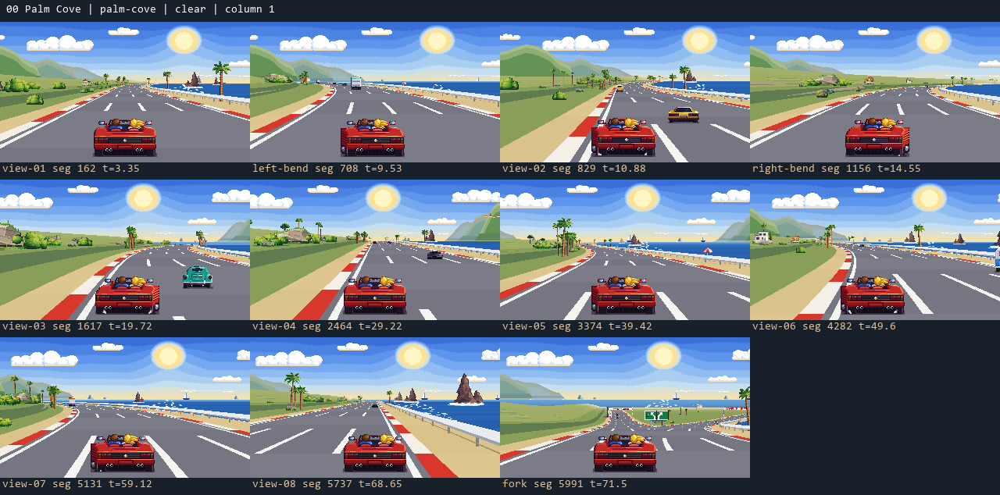
02 · Coral Bluffs
Gelände und akzeptierte Fernberge bewahren; Felsübergänge verfeinern.
Spalte 2 · P2 · 11 Ansichten · Stage-Report
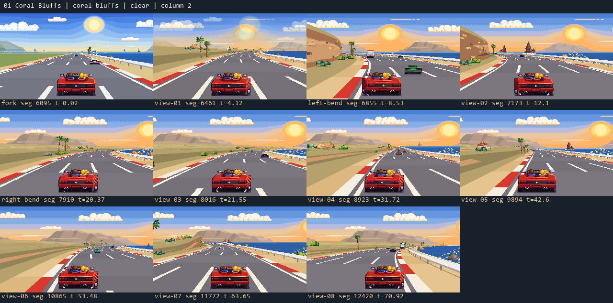
03 · Surfside
Starke Sonnenuntergangsszene; Strand und Ort als zusammenhängende Plätze bauen.
Spalte 3 · P2 · 11 Ansichten · Stage-Report
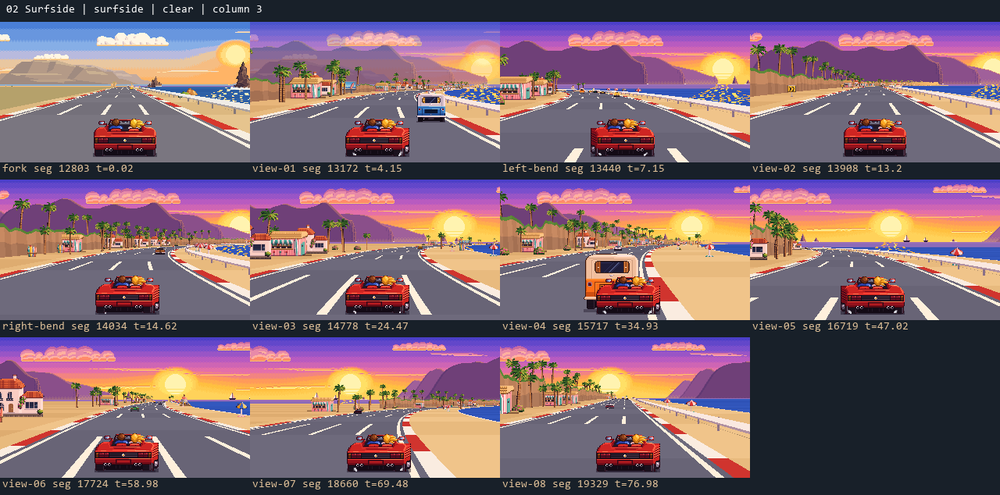
04 · Cypress Point
Gute Baumformen; übergroße Vorderhänge und Lichtabstimmung bearbeiten.
Spalte 4 · P2 · 11 Ansichten · Stage-Report
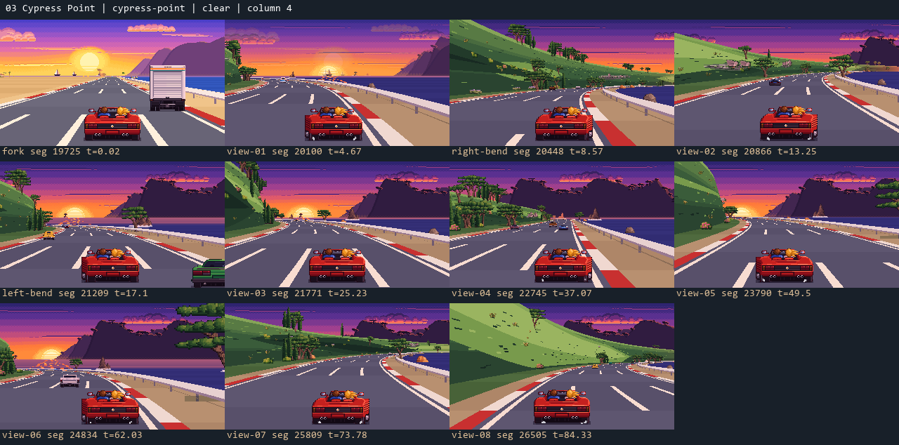
05 · Twilight Bay
Vollwertiger Landschafts- und Siedlungsumbau nötig.
Spalte 5 · P1 · 11 Ansichten · Stage-Report
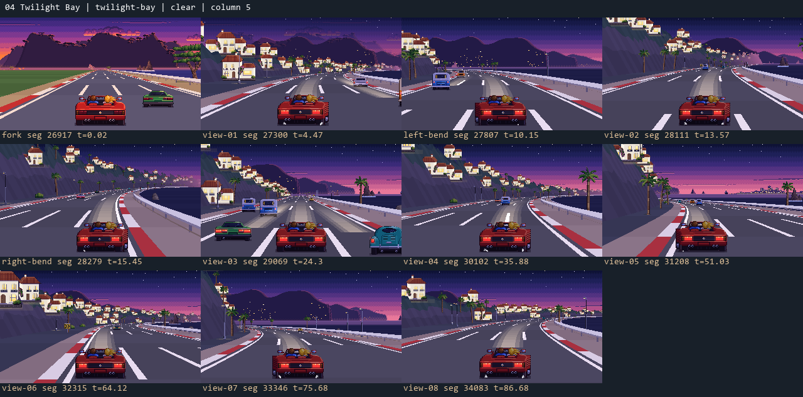
06 · Thunder Highway
Schilderlogik zuerst; technische Umgebung und Regen anschließend beruhigen.
Spalte 2 · P1 · 12 Ansichten · Stage-Report
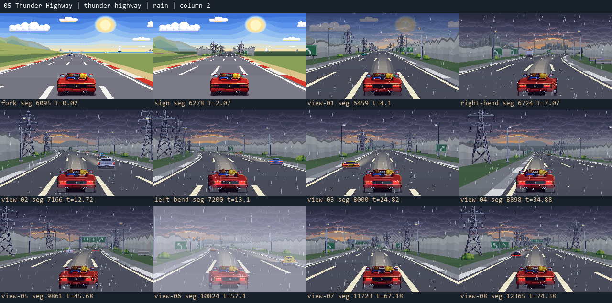
07 · Vineyard Valley
Weinberge räumlich neu ordnen; Weingüter auf echte Höfe setzen.
Spalte 3 · P1 · 12 Ansichten · Stage-Report
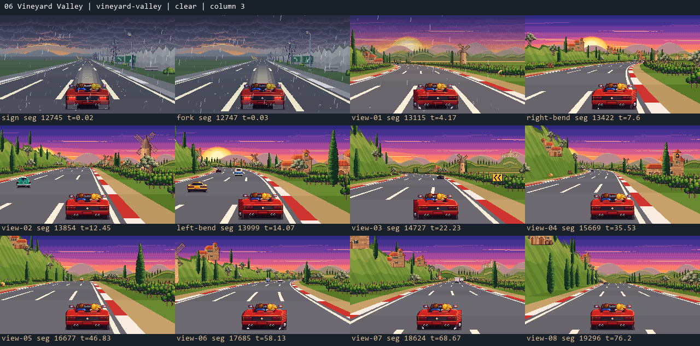
08 · Redwood Pass
Waldtiefe stärken und den geschlossenen Wandkorridor öffnen.
Spalte 4 · P1 · 11 Ansichten · Stage-Report
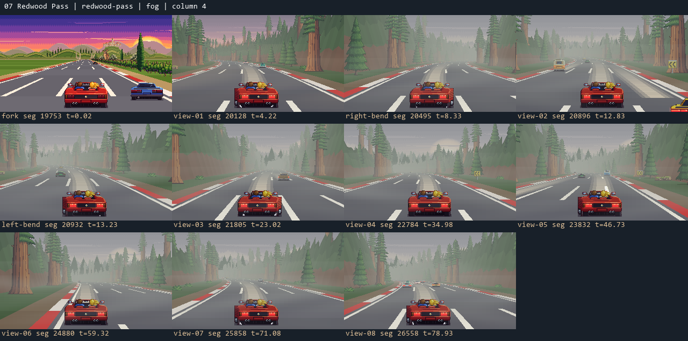
09 · Painted Desert
Gute offene Grundlandschaft; Sandzeichnung und Seitenwind fairer vermitteln.
Spalte 3 · P1 für Böenvorlauf, P2 für Grafik · 12 Ansichten · Stage-Report
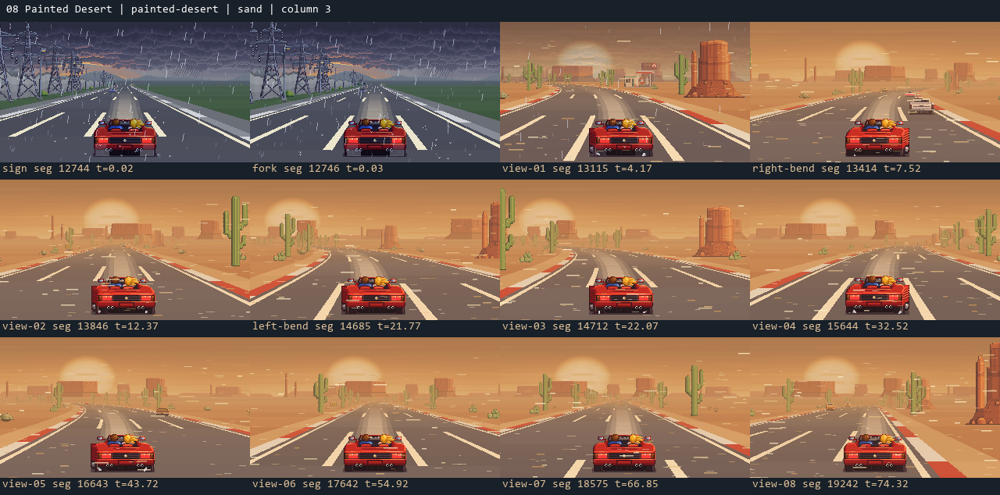
10 · Death Valley
Canyoncharakter erhalten, endlose Streifenwand und Hitzewackeln ersetzen.
Spalte 4 · P1 · 11 Ansichten · Stage-Report
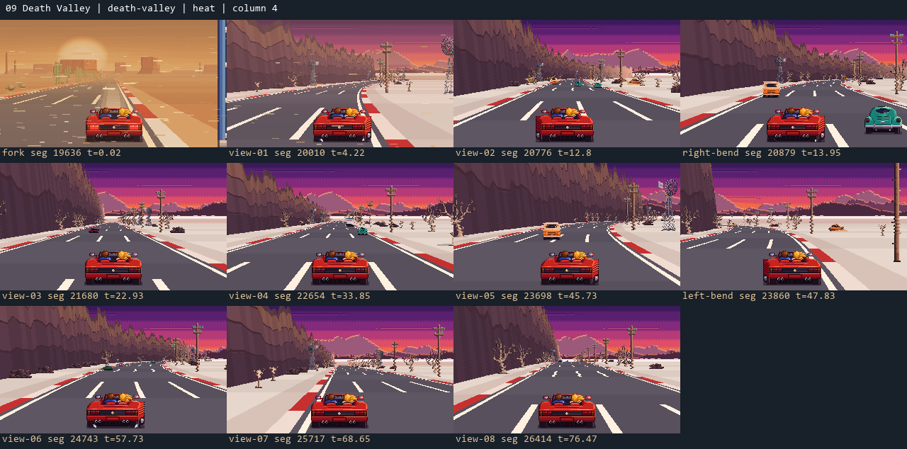
11 · Neon City
Bereits starke Stadtidentität; Licht und Gebäuderhythmus gezielt ordnen.
Spalte 5 · P2 · 12 Ansichten · Stage-Report
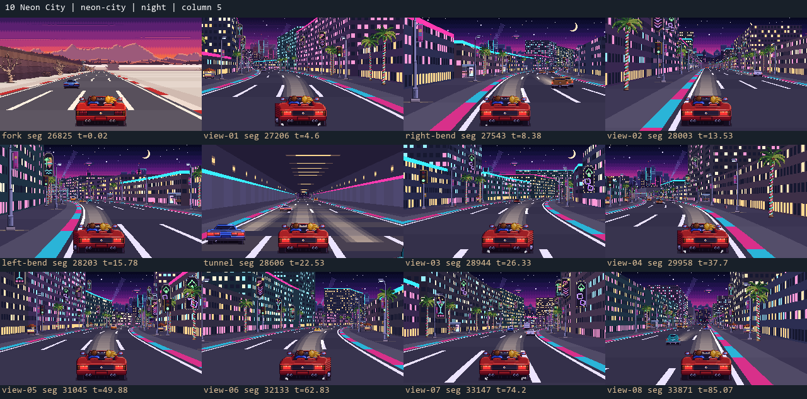
12 · Snowcap Pass
Größter kombinierter Bedarf bei Gelände, Eislesbarkeit und Fairness.
Spalte 4 · P1 · 12 Ansichten · Stage-Report
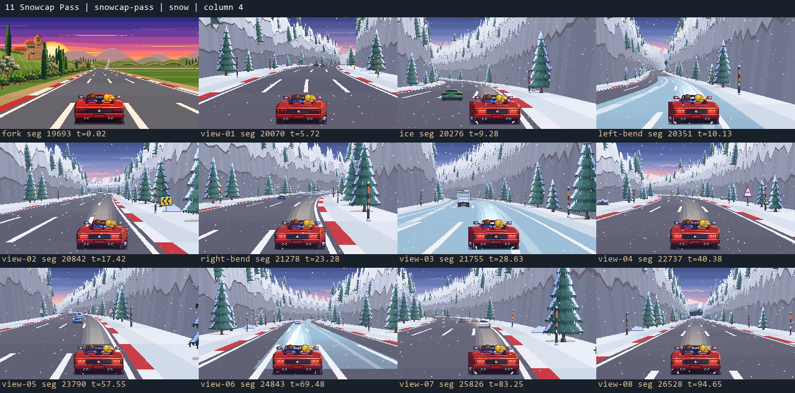
13 · Gold Rush Town
Aus verstreuten Westernobjekten einen Ort bauen; Hitzeflimmern deutlich begrenzen.
Spalte 5 · P1 · 11 Ansichten · Stage-Report
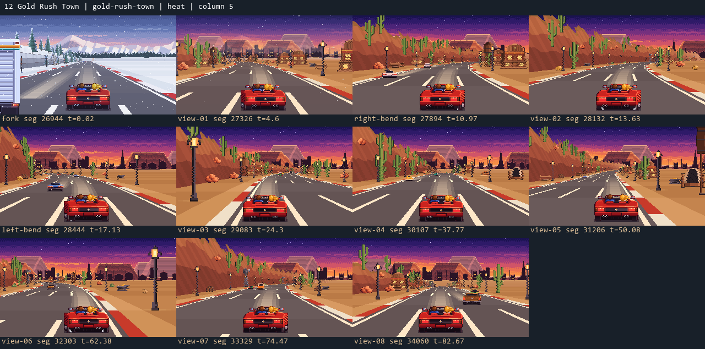
14 · Crystal Lake
Schöne Mondstimmung; Seeufer von der Meereslogik trennen.
Spalte 5 · P1 · 11 Ansichten · Stage-Report
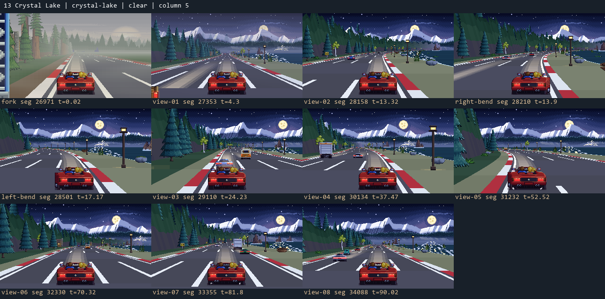
15 · Starlight Summit
Gute nächtliche Tiefe; eigenes Gipfelziel und klare Lichtführung fehlen.
Spalte 5 · P1 für Zielmotiv, P2 für Gelände · 11 Ansichten · Stage-Report
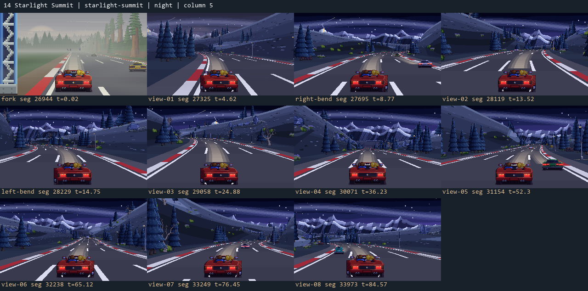